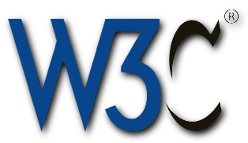
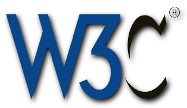

Web Platform Strategy: 2012 (Draft)
Web Platform Leadership Team
Web Platform Mantras
- Make significant contributions to standards bodies and open-source technologies that establish Adobe as a productive player in pushing the web forward
- Communicate our HTML5-related efforts in an intelligent and respectful manner to build credibility as thought leaders with the wider web community
- Pay attention to the progress of the web platform in certain technology spaces where Flash is currently incumbent, to maximize future opportunities
- Act as a beacon within Adobe for any team interested in participating with web standards or contributing to web technologies
Web Platform Strategy
- Thought Leadership vs Point Product Support
- Point product support is a non-goal for Web Platform, apart from WEF-enabled support
- We will aid in establishing connections for products needing involvement with standards, WebKit, etc.
- Driving vs Supporting
- We will achieve a global balance between driving new initiatives and supporting existing ones initiated by others
- Ideally this balance is 50/50
- Finishing vs More ideas
- Finishing feature work establishes commitment
- Broad and responsive involvement establishes leadership
- Introducing features with “bang for the buck” is necessary to maintain leadership
- It’s ok to back away from a feature if we are clear and transparent about why
Web Platform Strategy 2
- Implementation vs Involvement
- High level of active involvement is needed to facilitate implementation success
- Engineering commits will be done as part of feature development in order to satisfy committer/reviewer KPIs
- Involvement activities can be broad. E.g active presence in IRC, lists, hackathons, etc.
- Features vs Non-Features
- We will favor feature work, but will allot capacity for non-feature work
- Ideally we will balance an 80/20 ratio for feature vs non-feature work
- Where to be Involved
- Evangelizing directly to Standards & WebKit community will come from Web Platform
- General evangelizing to broader web dev community will be a joint effort across evangelism and individual product teams, including Web Platform
- General consumer is not a direct focus for the Web Platform team’s outreach activities
Where will we focus?
- Tier 1: Enabling Visually Expressive Content
- Layout
- Rendering
- SVG Citizenship
- Animation
- Tier 2: Laying a Foundation for Web App Dev
- CSS Language
- Advanced Rendering
- Component Models
- Asset Management
- JavaScript Concurrency
- Tier 3: Non-Feature Engineering Contributions
- Quality
- Developer Productivity
- Tier 4: Below the “Line”
- Audio/Video
- RT Streaming Media
- Typography
Web Standards/WebKit 2012 "Features"
| Feature | Why? | Involvement Level |
|---|---|---|
| 1. CSS Regions (spec, code, tests) | Thought leadership, finish what started, aligns with expertise | Driver (spect, impl) |
| 2. CSS Exclusions (spec, code, tests) | Thought leadership, finish what started, aligns with expertise | Driver (spect, impl) |
| 3. CSS Shaders (spec, code, tests) | Thought leadership, finish what started, aligns with expertise | Driver (spect, impl) |
| 4. Progress Events (Image only) | finish what started, impactful and immediate win | Driver (spect, impl) |
| 5. CSS Transforms in SVG (spec, code, tests) | finish what started, aligns with expertise | Driver (spect, impl) |
| 6. Compositing (spec, code, tests) | Follow thru on verbal commitment, aligns with expertise | Driver (spect, impl) |
| 7. CSS Variables | Highly visible feature with broad developer impact | Support (specifics TBD) |
| 8. Shadow DOM | Highly visible feature with broad developer impact | Support (specifics TBD) |
| 9. Animation | Area “begging” for thought leadership, aligns with Adobe expertise, possible tooling opportunities | Driver (specifics TBD) |
| 10. WebKit Perf Bots | WebKit eng improvement, tactical collaboration w/ Google | Support |
| 11. WebKit Dynamic Analysis | WebKit eng improvement, tactical collaboration w/ Google | Support |
| 12. WebKit Code Coverage | Thought leadership WebKit engineering improvement | Driver (on us for design, impl, docs, adoption) |
| 13. WebKit Unit Tests | WebKit engineering improvement | Support or Driver |
Desktop Goals
- Low barrier to entry for desktop products using web technologies
- WebKit-powered preview or authoring surfaces
- Parsing of CSS, JavaScript, HTML
- Application container with easy integration with the desktop (e.g file system access, drag & drop, menuing, windowing, desktop/dock icon, etc)
- Access to leading-edge Web Technologies
- Low ongoing engineering costs for these applications
Desktop 2012 EARLY Strategy
- Continue to develop an embedded WebKit (or Chromium-based) component that can be used by non-web-based desktop products (e.g Edge
- Requirements for leading-edge web features will drive need for component separate from WebKit/Chromium trunk
- This Embedded component is modular
- For web-based desktop products (e.g Brackets), essentially the “webview” component for Phonegap Desktop
- Note: Implies contributions from Web Platform team to PhoneGap Desktop
- Phonegap Desktop Requirements (vis a vis Brackets)
- Embedded WebKit (or Chromium) in the application shell to have cross-platform consistency
- File-system access
- Windowing
- Menuing
- Launch from desktop (including icon on desktop/dock)
- Next Steps
- Catalin/Stefan to re-evaluate architecture and approach in relation to Edge and Brackets requirements
- Build out a prototype
Open Issues
- Engineering plan for JavaScript contributions
- Requirement for desktop access to leading-edge Web Technologies

 
